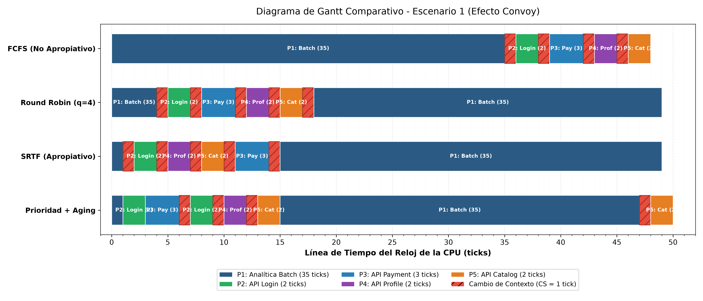

Asignatura: Sistemas Operativos
Opción Seleccionada: Opción 1 — Gestión de Procesos y Planificación de CPU
Tecnología del Simulador: C++17 Puro (Arquitectura Modular y Determinista)
Herramientas de Análisis: Python 3 (Matplotlib, Pandas, Seaborn)
En entornos modernos de backend, cloud computing y microservicios, la CPU atiende cargas de cómputo altamente heterogéneas que compiten por ciclos de ejecución:
El simulador implementa el ciclo de vida canónico de procesos mediante una Máquina de Estados Finitos (FSM) determinista controlada por un reloj discreto ($t = 0, 1, 2, \dots$):
+-----------------------------------------------------------+
| NEW |
+-----------------------------------------------------------+
| (Arribo en t = T_llegada)
v
+-----------------------------------------+
| READY |<---------------+
+-----------------------------------------+ |
| Dispatcher ^ Preemption |
v (Algoritmo de CPU) | (Quantum / Prioridad / SRTF)|
+-----------------------------------------+ | E/S Completada
| RUNNING | | (IOQueue)
+-----------------------------------------+ |
| | |
Terminación v v Solicitud de E/S |
+-----------------------+ +-----------------------------------------+
| TERMINATED | | WAITING |
+-----------------------+ +-----------------------------------------+
Process): PID, estado, ráfagas secuenciales {CPU, E/S}, prioridades estática y dinámica, contadores de espera ($W$), respuesta ($R$) y cambios de contexto.CONTEXT_SWITCHING).Evaluamos cuantitativamente cuatro políticas fundamentales de los sistemas operativos:
| Política | Naturaleza | Criterio de Decisión | Fortaleza Técnica | Vulnerabilidad Clave |
|---|---|---|---|---|
| FCFS | No Apropiativo | Orden de llegada FIFO | Cero sobrecarga de planificación | Vulnerable al Efecto Convoy ($W$ elevado) |
| Round Robin (RR) | Apropiativo | Turnos por Quantum ($q$) | Máxima equidad interactiva | Sensible al costo de Context Switch |
| SRTF | Apropiativo | Menor tiempo restante de CPU | Demostrablemente óptimo en $W_{\text{prom}}$ | Susceptible a inanición de tareas largas |
| Prioridad con Aging | Apropiativo | Mayor prioridad (1 = Máxima) | Promoción dinámica: Erradica Inanición | Requiere calibrar el umbral de aging ($K$) |
Escenario: P1 (Batch, $35\text{ ticks}$) llega en $t=0$, seguido de peticiones interactivas P2 a P5 ($2 - 3\text{ ticks}$) en $t=1, 2, 3, 4$.
Visualización de alta resolución generada por scripts/plot_metrics.py:

Escenario: Tarea de fondo P1 (Prioridad 5, $25\text{ ticks}$) frente a un flujo continuo de alarmas urgentes P2 a P7 (Prioridad 1 y 2).
Curva experimental generada mediante barrido exhaustivo de $q \in [1, 15]$ en el Escenario 1:
make, make test y make plots.github.com/Anticife/sis_opmake && make test — Compilación y ejecución de escenariosmake plots — Generación de gráficas de alta resolución./simulador --scenario <path> --step — Modo interactivo paso a paso